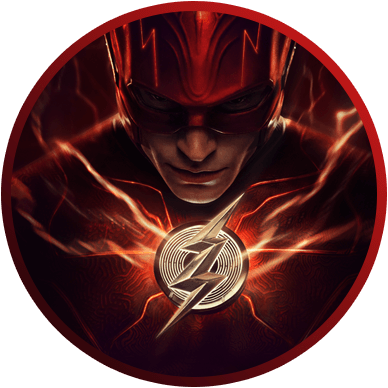
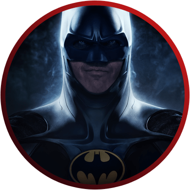
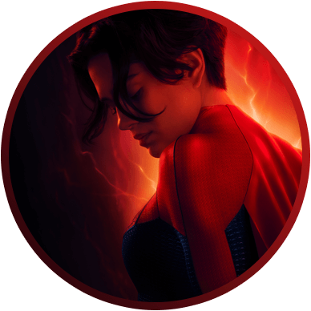

Flash
Barry usa seus superpoderes para viajar no tempo na tentativa de salvar sua família. Só que algo dá errado, e ele fica preso em uma realidade onde o General Zod está de volta e quer destruir tudo. Por isso, ele vai precisar de toda a ajuda que puder obter.

Ezra Miller
é The Flash

Michael Keaton
é Batman

Sasha Calle
é Supergirl
Starstruk T3
Em breveDois anos após seu rompimento com o astro de cinema Tom, Jessie explora a vida de solteira, enquanto é confrontada com o peso de suas decisões